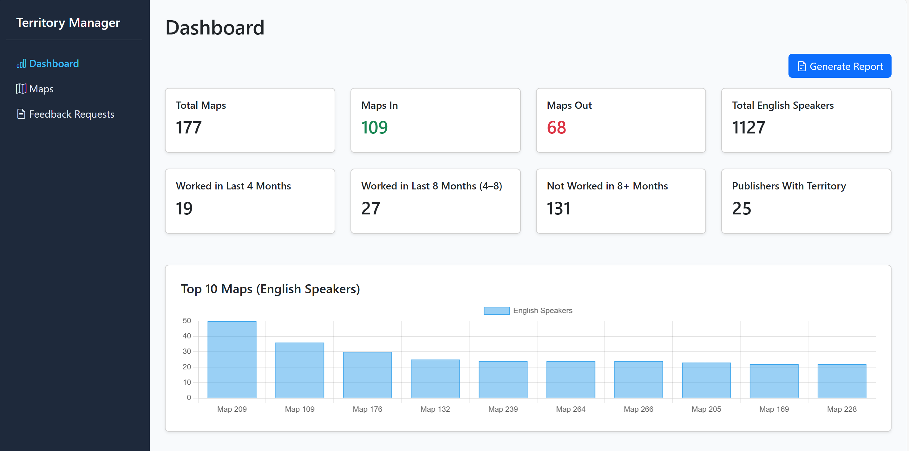

Overview
Territory Manager is a private internal tool designed to replace a manual,
fragmented workflow with a single, reliable system for managing territories
and assignments.
Built for a distributed organization with strict privacy requirements,
the app prioritizes clarity, simplicity, and low-maintenance operation.

Problems to Solutions
- Outdated processes
- Document clutter
- Manual calculations
- Time consuming
- No mobile solution
- Limited access
- ✓ Modern solution
- ✓ Structured data
- ✓ Automated calculations
- ✓ Easy updates
- ✓ Mobile support
- ✓ Worldwide access
- ✓ Secure network
👉 Outcome: Less stress, a cleaner workflow and more time for you.
Design constraints that shaped the system
What shaped the system
Privacy
Self-hosted with no public cloud exposure.
Simplicity
Designed for non-technical users.
Cost
Runs reliably on low-cost hardware.
Access
Secure remote access via private networking.
The goal wasn’t to build more software — it was to remove friction.
A simple deployment
Hosting
- Raspberry Pi (Linux)
- Long-running internal service
- No public endpoints
Access
- Tailscale secure mesh network
- Restricted to approved users
- Private by default
Why this setup
- Low complexity
- Easy to maintain
- Fits privacy constraints
Final thoughts
This application has dramatically simplified the process. If I were to expand the system, I would add an audit history feature and improve the onboarding process, particularly around permission management.
Get in Contact
Whether you have an idea, a role, or just want to say hello—I’m here.